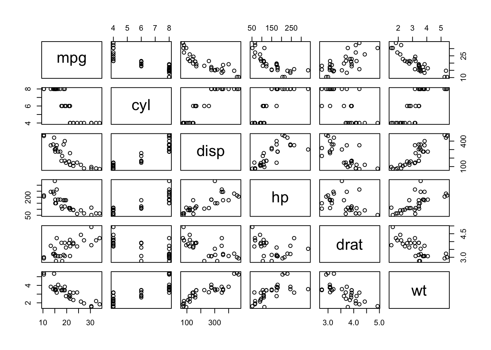
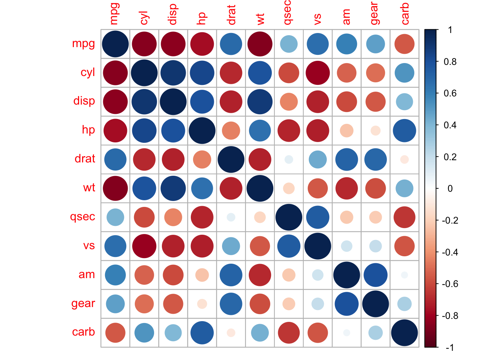
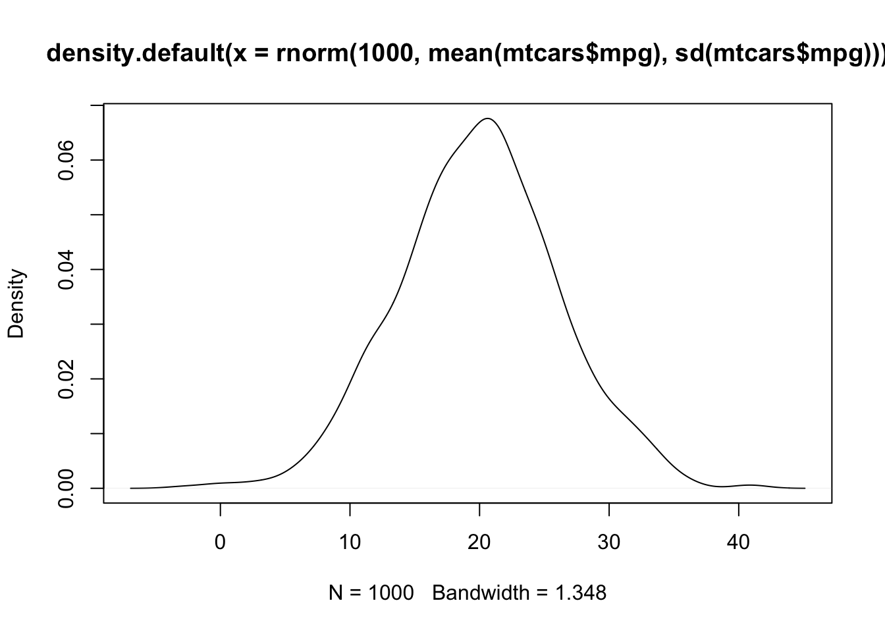

Chapter 3 Correlation and Regression
3.1 Scatter Plots
3.2 Lab 2
3.2.1 Review tidyverse verbs
In Lab 1 we did a deep dive into the tidyverse verbs. As those ideas will be important for our work in this lab, we will do a quick overview.
3.2.1.1 pipe operator and tidyverse::select
We can pass arguments for any dataframe with the pipe operator, and by doing so cut down on a lot of other code and at the same time make our code more readable. For instance,
## ── Attaching packages ─────────────────────────────────── tidyverse 1.3.0 ──## ✓ ggplot2 3.2.1 ✓ purrr 0.3.3
## ✓ tibble 2.1.3 ✓ dplyr 0.8.3
## ✓ tidyr 1.0.0 ✓ stringr 1.4.0
## ✓ readr 1.3.1 ✓ forcats 0.4.0## ── Conflicts ────────────────────────────────────── tidyverse_conflicts() ──
## x dplyr::filter() masks stats::filter()
## x dplyr::lag() masks stats::lag()## Parsed with column specification:
## cols(
## a = col_double(),
## b = col_double(),
## c = col_double()
## )## # A tibble: 3 x 1
## a
## <dbl>
## 1 1
## 2 4
## 3 73.2.1.2 tidyverse::filter
## Parsed with column specification:
## cols(
## a = col_double(),
## b = col_double(),
## c = col_double()
## )## # A tibble: 2 x 3
## a b c
## <dbl> <dbl> <dbl>
## 1 4 5 6
## 2 7 8 93.2.1.3 tidyverse::mutate
## Parsed with column specification:
## cols(
## a = col_double(),
## b = col_double(),
## c = col_double()
## )## # A tibble: 3 x 4
## a b c a_times_b
## <dbl> <dbl> <dbl> <dbl>
## 1 1 2 3 2
## 2 4 5 6 20
## 3 7 8 9 563.2.1.4 tidyverse::summarize
## Parsed with column specification:
## cols(
## a = col_double(),
## b = col_double(),
## c = col_double()
## )## # A tibble: 1 x 1
## a_bar
## <dbl>
## 1 43.2.1.5 tidyverse::group_by
## Parsed with column specification:
## cols(
## a = col_double(),
## b = col_double(),
## c = col_double()
## )df1 = df %>% mutate(col = "level")
df2 = df*2
df2 = df2 %>% mutate(col = "times_2")
df3 = rbind(df1, df2)
df %>% summarize(abar = mean(a))## # A tibble: 1 x 1
## abar
## <dbl>
## 1 4## # A tibble: 6 x 4
## a b c col
## <dbl> <dbl> <dbl> <chr>
## 1 1 2 3 level
## 2 4 5 6 level
## 3 7 8 9 level
## 4 2 4 6 times_2
## 5 8 10 12 times_2
## 6 14 16 18 times_2## # A tibble: 2 x 4
## col a_bar b_bar n
## <chr> <dbl> <dbl> <int>
## 1 level 4 5 3
## 2 times_2 8 10 33.2.1.6 EDA
Here is a good tutorial on exploratory data analysis from here
learnr::run_tutorial("EDA", "learningAnalytics")
3.2.1.7 Correlation
Let’s take a look that the mtcars dataset.
## # A tibble: 32 x 11
## mpg cyl disp hp drat wt qsec vs am gear carb
## <dbl> <dbl> <dbl> <dbl> <dbl> <dbl> <dbl> <dbl> <dbl> <dbl> <dbl>
## 1 21 6 160 110 3.9 2.62 16.5 0 1 4 4
## 2 21 6 160 110 3.9 2.88 17.0 0 1 4 4
## 3 22.8 4 108 93 3.85 2.32 18.6 1 1 4 1
## 4 21.4 6 258 110 3.08 3.22 19.4 1 0 3 1
## 5 18.7 8 360 175 3.15 3.44 17.0 0 0 3 2
## 6 18.1 6 225 105 2.76 3.46 20.2 1 0 3 1
## 7 14.3 8 360 245 3.21 3.57 15.8 0 0 3 4
## 8 24.4 4 147. 62 3.69 3.19 20 1 0 4 2
## 9 22.8 4 141. 95 3.92 3.15 22.9 1 0 4 2
## 10 19.2 6 168. 123 3.92 3.44 18.3 1 0 4 4
## # … with 22 more rows## mpg cyl disp hp
## Min. :10.40 Min. :4.000 Min. : 71.1 Min. : 52.0
## 1st Qu.:15.43 1st Qu.:4.000 1st Qu.:120.8 1st Qu.: 96.5
## Median :19.20 Median :6.000 Median :196.3 Median :123.0
## Mean :20.09 Mean :6.188 Mean :230.7 Mean :146.7
## 3rd Qu.:22.80 3rd Qu.:8.000 3rd Qu.:326.0 3rd Qu.:180.0
## Max. :33.90 Max. :8.000 Max. :472.0 Max. :335.0
## drat wt qsec vs
## Min. :2.760 Min. :1.513 Min. :14.50 Min. :0.0000
## 1st Qu.:3.080 1st Qu.:2.581 1st Qu.:16.89 1st Qu.:0.0000
## Median :3.695 Median :3.325 Median :17.71 Median :0.0000
## Mean :3.597 Mean :3.217 Mean :17.85 Mean :0.4375
## 3rd Qu.:3.920 3rd Qu.:3.610 3rd Qu.:18.90 3rd Qu.:1.0000
## Max. :4.930 Max. :5.424 Max. :22.90 Max. :1.0000
## am gear carb
## Min. :0.0000 Min. :3.000 Min. :1.000
## 1st Qu.:0.0000 1st Qu.:3.000 1st Qu.:2.000
## Median :0.0000 Median :4.000 Median :2.000
## Mean :0.4062 Mean :3.688 Mean :2.812
## 3rd Qu.:1.0000 3rd Qu.:4.000 3rd Qu.:4.000
## Max. :1.0000 Max. :5.000 Max. :8.000We might be interested in correlations between these columns.


3.2.1.8 Regression
Let’s take a look the relationship between a car’s miles per gallon, and its attribute.
## [1] 20.09062## [1] 6.026948
Let’s run a model that finds the relationship between MPG and the weight of the car.
##
## Call:
## lm(formula = mpg ~ wt, data = mtcars)
##
## Residuals:
## Min 1Q Median 3Q Max
## -4.5432 -2.3647 -0.1252 1.4096 6.8727
##
## Coefficients:
## Estimate Std. Error t value Pr(>|t|)
## (Intercept) 37.2851 1.8776 19.858 < 2e-16 ***
## wt -5.3445 0.5591 -9.559 1.29e-10 ***
## ---
## Signif. codes: 0 '***' 0.001 '**' 0.01 '*' 0.05 '.' 0.1 ' ' 1
##
## Residual standard error: 3.046 on 30 degrees of freedom
## Multiple R-squared: 0.7528, Adjusted R-squared: 0.7446
## F-statistic: 91.38 on 1 and 30 DF, p-value: 1.294e-10And another good tutorial from here
learnr::run_tutorial("LinearRegression", "learningAnalytics")